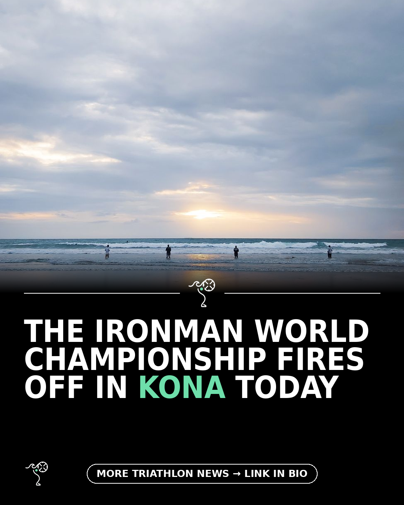

Triathlon News Daily
Saturday, 10 October 2026 · generated automatically

Today's stories
- Kona week kicks off with underpants run, fire shows and race morning220 Triathlon
- Gordon Ramsay sends a message to every athlete racing Kona today220 Triathlon
- Garmin Enduro 4 lands with Fenix 9 internals and a solar bezelDC Rainmaker
- Can you race a triathlon in a regular surf wetsuit?220 Triathlon
- Nasal breathing, broccoli shots and other odd performance hacks220 Triathlon